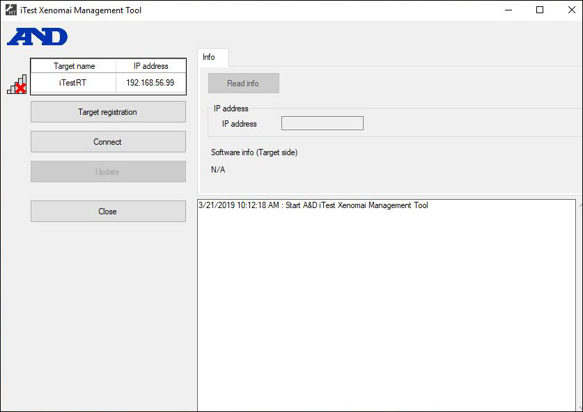
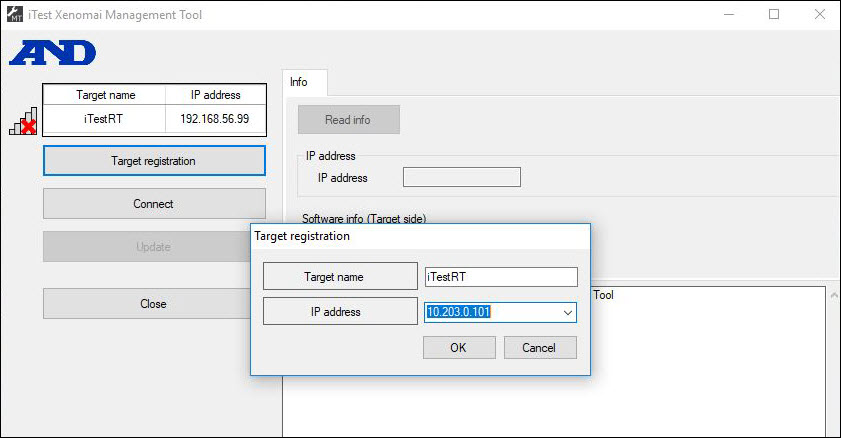
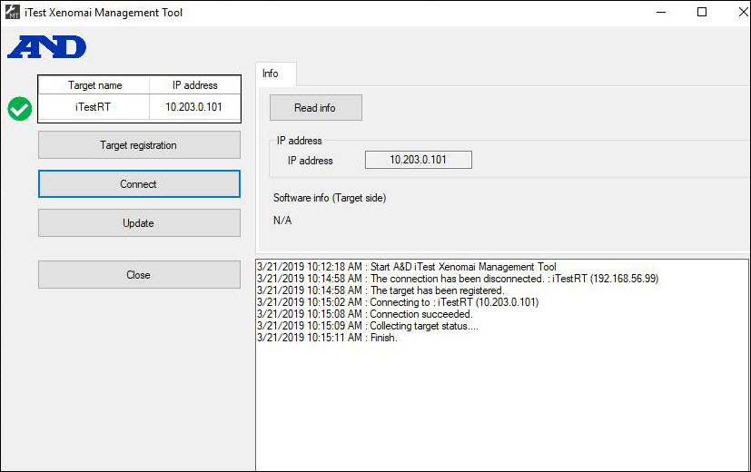
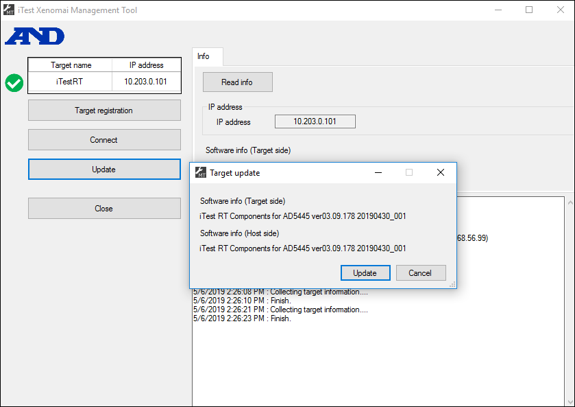
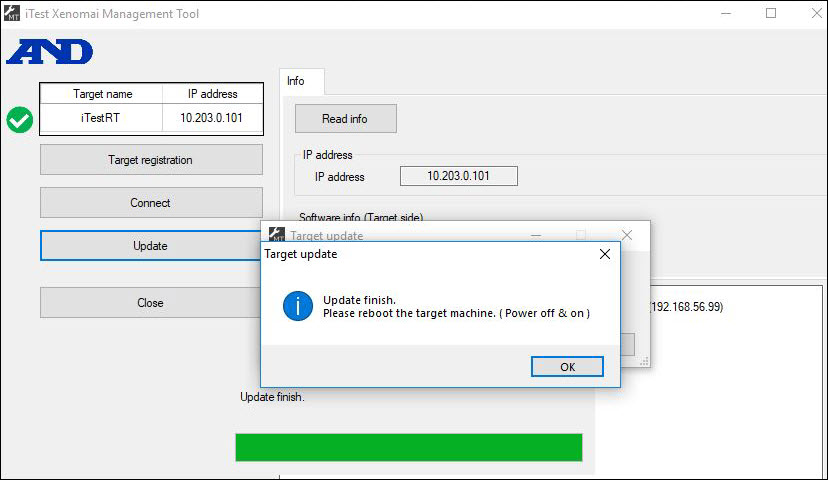

iTest User's Guide
The iConnect RTC box from A&D uses the open source real-time OS - Xenomai. After setting up the Xenomai system using the AD-XPRTS Target Environment Installation guide, a special installation process is required to put on the initial iTest binaries or to patch the existing ones. The iTest Xenomai Management Tool is used to transfer files from your Windows PC to the iConnect RTC. This tool uses FTP and Telnet to transfer and write the binaries to the iConnect RTC write-protected disk. Use the following instructions for an initial machine installation or a system patch.
To access the iTest Xenomai Management Tool, open iTestRTManagementTool.exe, located in your $EXECUTEDIR. The tool will appear in a new window to transfer the $EXECUTEDIR\ADXPRTSDevEnv\target\aandd_adxprts_itestrt_setup.tar.bz2 file on your PC over to the iConnect RTC.
iTest Xenomai Management Tool

To register your target machine, click Target Registration. A new dialog will appear, prompting you to enter the name of the target PC and its IP address. After defining these fields, click OK.
Target Registration

After registering your machine, you may click Connect to connect the iTest Xenomai Management Tool to your iConnect RTC.
Connect

Click Update to update the iTest target files needed to run on the iConnect RTC.
Target Update

Once the target has been updated, you will be prompted to manually reboot the target machine.
Update Finished

VXISystemName=10.203.0.101SystemType=ADXPRTS_DISTUseXenomaiKernel=FALSE